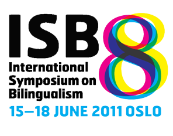

Presentations on the 8th International Symposium on Bilingualism, Oslo, Norway, 15-18 June 2011:
Colloquia presentations
WA 1-4
Time: Wednesday, 15 June 2011: 11:00am-1:00pm
Location: SL Aud
Language control and cognitive functions in bilinguals
Controversy surrounds the way in whick bilingual speakers control the use of their two languages and consequently the behavioral and brain bases of the source of cognitive advantages that bilinguals show in certain non-verbal tasks. This colloquium presents novel psycholinguistic and neuroimaging data on the nature of language control that bear on brain bases of the cognitive advantage.
Presentations of the colloquium
Blocked naming yields evidence for global inhibition in both the planning and production of speech
• Chip Gerfen (Pennsylvania State University),
• Judith F. Kroll (Pennsylvania State University)
• Joyce Tam (Washington State University),
• Time Poepsel (Pennsylvania State University)
• Taomei Guo (Beijing Normal University),
• Maya Misra (Pennsylvania State University)
A blocked picture naming task was used to examine inhibitory effects of L2 on L1 production. The results showed that naming in L2 modulated L1 speech planning and production in the form of longer latencies to ini
WL 1-4
Time: Wednesday, 15 June 2011: 11:00am-1:00pm
Location: HE Aud 3
Bilingualism across and within modalities
The goal of this colloquium is to highlight the importance of studying sign languages in understanding bilingual language processing and representation. Five talks will be presented, which examine dual language activation across modalities, language control (code-blending and code-switching), and written language processing by deaf bilinguals. All talks characterize the unique nature of sign language bilingualism, and together they explore the psycholinguistic mechanisms that underlie the bilingual language system.
Presentations of the colloquium
A cross-linguistic sudy of non-selective lexical access in deaf bilinguals: ASL-English and DGS-German bilinguals compared
• Christian Rathmann (University of Hamburge),
• Okan Kubus (University of Hamburge),
• Jill P. Morford (University of New Mexico & VL2),
• Corrine Occhino-Kehoe (University of New Mexico & VL2),
• Erin Wilkinson (University of Manitoba),
• Pilar Pinar (Gallaudet University & VL2),
• Judith F. Kroll (Pennsylvania State University)
We investigated non-selective lexical access in deaf bilinguals from the US and Germany who use a signed language for daily communication and are fluent readers of a spoken language. Results of a monolingual implicit priming task involving semantic judgments indicated that English and German words acticate their signed translation equivalents.
Co-activation of phonology in speech-sign and speech-speech bilinguals
• Janet G. Van Hell (Pennsylvania State University & Radboud University Nijmegen),
• Daan Hermans (Royal Dutch Kentalis),
• Elselieke Hermes (Radboud University Nijmegen),
• Joyce van der Loop (Radboud University Nijmegen),
• Ellen Ormel (Radboud University Nijmegen),
Do patterns of co-activation of languages extend to bimodal speech-sign bilinguals? Using sign-picture and word-picture verification tasks, we examined the co-activation of phonology in Dutch-Sign Language bimodal bilinguals and Dutch-English unimodal bilinguals. Results showed phonological co-activation within L2-Sign language and L2-English, and phonological co-activation across signed and oral languages.
Contextualizing the reading patterns of deaf individuals within studies on bilingual sentence processing
• Pilar Pinar (Gallaudet University & VL2),
• Giuli Dussias (Pennsylvania State University),
• Matthew Carlson (University of Chicago),
• Jill Morford (University of New Mexico & VL2),
This study examined the processing of syntactic and semantic cues by deaf ASL-English bilingual readers. Results indicate that deaf readers' patterns of reliance on available sentential cues are consistent with those of other bilingual readers and highlight the need to contexualize studies on deaf literacy within bilingual sentence processing.
TB 1-4
Time: Thursday, 16 June 2011: 10:30am-12:30pm
Location: GS Aud 1
CHAIR (S):
• Janet Van Hell (Pennsylvania State University)
Universal and language-specific patterns in bilingual processing: The importance of a comparative approach
This symposium aims to highlight the importance of adopting a comparative approach and asks how variations in language and bilingual processing at the phonological, lexical and morpho-syntactic levels. Two behavioural and two neurocognitive studies are presented. Each compares different populations in a single study to reveal universal or language-specific patterns in L2 development and bilingual processing.
Presentations of the colloquium
Does morphological processing in L2 depend on the structure of L1?
• Laurie B. Feldman (The University at Albany),
• Janet G. Van Hell (Pennsylvania State University & Radboud University Nijmegen),
• Mirjam Ernestus (Radboud University Nijmegen & Max Planck Institute),
• Carol Fowler (The University of Connecticut & Haskins Labs),
• Hua Shu (Beijing Normal University)
Patterns of cross-modal priming in English revealed the processing of regular morphologically-related (plays-PLAY), as contrasted with form-similar (place-PLAY) pairs in bilinguals (Dutch-English, Chinese-English). Morphological facilitation was significant relative to unrelated pairs. Differences between Dutch-English and Chinese-Engligh bilinguals for form-related pairs demonstrates that L1 influences inflectional processing in L2.
Language-specific experience and AoA modulate neural activities in L1 and L2
• Ping Li (Pennsylvania State University),
• Jing Yang (Pennsylvania State University),
• Hua Shu (Beijing Normal University)
• Li Hai Tan (University of Hong Kong)
We discuss neuroimaing data of lexical category representation and grammatical processing in Chinese-English bilinguals. Our results indicate that experience with language-specific properties can shape patterns of functional activities in the bilingual brain, and that neural response patterns may be modulated by the timing of the L2 exposure.
When gender and looks don't go hand in hand
• Paola E. Dussias (Pennsylvania State University),
• Teresa Bajo (University de Granada),
• Chip Gerfen (Pennsylvania State University),
• Jorge Valdes Kroff (Pennsylvania State University)
• Luis Morales (University de Granada)
Using the Visual World paradigm, we investigated whether the usefulness of grammatical gender during speech processing is modulated by the L1. Our findings indicate that Italian-Spanish, but not English-Spanish, bilinguals oriented their eye movements sooner to the target noun on different gender trials (i.e., when the article is potentially informative).
On the consequence of late bilingualism for morpho-syntactic processing in the L2: Evidence from behavioral and ERP data
• Eleonora Rossi (Pennsylvania State University),
• Jason Gullifer (Pennsylvania State University),
• Paola E. Dussias (Pennsylvania State University)
• Judith F. Kroll (Pennsylvania State University)
We compared the performance of native Spanish speakers with late English-Spanish bilinguals on a sentence processing task including Spanish clitic pronouns. By comparing late bilinguals to native speakers we examined hypothesized constraints on late L2 acquisition. By comparing native speaker groups, we asked whether grammatical structures are influenced by immersion.
Discussant
• Judith F. Kroll (Pennsylvania State University)
TC 5-12
Time: Thursday, 16 June 2011: 2:00pm-6:30pm
Location: GS Aud 2
L1 attrition and bilingual development
This double panel presents the state of the art in L1 attrition research. The first half focuses on bilingual development in structural features (phonetics and word order patterns). In the second half, bilingual development is situated within the wider context of extralinguistic factors (such as language use) and attitudinal phenomena. It is considered to what extent recent developments, such as multicompetence and Dynamic Systems Theory, are of importance to the study of L1 attrition.
Presentations of the colloquium
Changing syntactic preferences in L1 attriters of German
• Carrie Jackson (Pennsylvania State University),
• Luke McDermott (Cornell University),
• Monika S. Schmid (University of Groningen),
An investigation of clause patterns in a corpus of free data from German attriters in Canada and the Netherlands suggests that syntacic preferences are to some extent influenced by L2 word order. It is argued that such changes reflect primarily surface-level interference rather than an erosion of underlying L1 knowledge.
TK 5-8
Time: Thursday, 16 June 2011: 2:00pm-4:00pm
Location: HE Aud 2
CHAIR (S):
• Ping Li (Pennsylvania State University),
• Viorica Marian (Northwestern University)
Computational modeling of bilingualism: Integrating acquisition and processing
In this symposium we present the state of the art in computational modeling of bilingualism. We present models that describe the complex interactive dynamics involved in the acquisition and organization of two linguistic systems. A particular attention is given to the integration of models that focus on acquisition/development and models that focus on representation and processing. The variety of models discussed will provide new forums for formulating and testing theories of bilingualism.
Presentations of the colloquium
Simulating cross-language priming: A computational study of the bilingual lexicon based on DevLex-II
• Xiaowei Zhao (Pennsylvania State University),
• Ping Li (Pennsylvania State University)
The DevLex-II model, an unsupervised neural network, is applied to account for cross-language priming effects in Chinese and English. The modeling results show that it is important to consider the interactive and developmental nature of the bilingual mental lexicon in explaining patterns of bilingual language processing.
FL 2-5
Time: Friday, 17 June 2011: 9:30am-12:00pm
Location: HE Aud 3
CHAIR (S):
• Barbara Malt (Lehigh University),
• Ping Li (Pennsylvania State University)
Dynamic lexical interaction of L1 and L2
Bilinguals receive input from different languages giving different ways of grouping the same objects by name. Bi-directional connections in the architecture of the lexical stores may yield influences on word acquisition and use not only from L1 to L2, but also from L2 to L1, and between two languages acquired in parallel. These talks will document the manifestations of cross-language lexical interactions and investigate the mechanisms by which they may come about.
Presentations of the colloquium
Naming all of the vegetables in a row: Does cross-language competition for selection increase under conditions of semantic blocking?
• Judith F. Kroll (Pennsylvania State University),
• Mark Minnick (Pennsylvania State University),
• Joyce Tam (Washington State University),
• Eleonora Rossi (Pennsylvania State University),
• Maya Misra (Pennsylvania State University),
• Chip Gerfen (Pennsylvania State University),
This study examined within and across-language activation for native and non-native speakers of English naming pictures in English in semantically blocked or mixed contexts. A comparison of behavioral and ERP methods was used to identify the time course over which activation within and across languages is resolved.
Bilinguals' categorization behavior: Internally or externally emergent?
• Benjamin Zinszer (Pennsylvania State University),
• Ping Li (Pennsylvania State University),
We propose a self-organizing feature map(SOM)model of bilingual category development. Using this model we test whether independent monolingual inputs are a plausible source of unique bilingual lexical categories. These predictions are tested against a sample of Chinese-English bilinguals with varying language-use patterns.
Paper presentations
WM3 Mona Roxana Botezatu, Maya Misra, Judith F. Kroll
Pennsylvania State University
Time: Wednesday, 15 June 2011: 12:00-12:30am
When L1 is shallow and L2 is deep: The role of language dominance in modeling the transfer of spelling-to-sound correspondences in bilingual reading
We examined Spanish-English bilinguals' skilled word reading aloud in each language. Reading times were slower and less accurate when the two languages were mixed. However, sensitivity to the consistency of spelling-to-sound correspondences was modulated by language dominance, suggesting that bilinguals initially transfer L1 consistency expectations to the L2.
WO5 Madelon Van den Boer1, Caitlin Ting2, Jaimie K. Minnicks2, Janet G. Van Hell2,3, Paola E. Dussias2, Judith F. Kroll2
1University of Amsterdam; 2Pennsylvania State University; 3Radboud University Nijmegen
Time: Wednesday, 15 June 2011: 2:30-3:00pm
Words are not pictures: How semantic constraint affects word and picture naming in bilinguals and multinguals
Can sentence context restrict lexical activation to the target language? Bilinguals, trilinguals, and monolinguals named words or pictures embedded in low or high semantically constrained sentence contexts. Results indicate that semantically constraining sentence contexts limits lexical selection to the target language in word naming but not in picture naming.
WO7 Noriko Hoshino1, Judith Kroll2
1Bangor University; 2Pennsylvania State University
Time: Wednesday, 15 June 2011: 3:30-4:00pm
When same and different script bilinguals speak in each of their languages: Does different-script bilingualism facilitate selection?
The present study investigated how same script (Spanish-English) and different script (Japanese-English) bilinguals select the language of production in switching and blocked naming paradigms. Overall the two groups performed similarly, suggesting that script differences cannot override cross-language competition and that the locus of inhibition of the L1 is in lexicalization.
WO10 Jason Gullifer, Judith Kroll, Dussias Paola
Pennsylvania State University
Time: Wednesday, 15 June 2011: 5:30-6:00pm
Can cross-language lexical activity be modulated by language-specific syntax?
We investigate whether language-specific syntax allows bilinguals to selectively access one language while recognizing words in sentences. Our data suggest a decrease in parallel activation of both languages following language-specific syntax compared to sentences without specific syntax. Implications for bilingual word recognition models and for code-switching are discussed.
FD6 Rosa Elisa Guzzardo Tamargo, Paola E. Dussias, Chip Gerfen, Christine Theberge, Jorge Valdes Kroff, Jason Gullifer
Pennsylvania State University
Time: Friday, 17 June 2011: 12:00pm-12:30pm
Linking comprehension costs to production patterns during the processing of mixed language
The study examines processing costs incurred when reading two code-switched constructions containing a Spanish auxiliary and an English participle. It includes two groups of bilingual code-switchers and examines the effects of two different tasks. Preliminary eye-tracking results display task-based differences but not group-based differences.
SH4 Rhonda McClain1, Judith F. Kroll1, Taomei Guo2, Bingle Chen2
1Pennsylvania State University; 2Beijing Normal University
Time: Saturday, 18 June 2011: 11:00am-11:30am
What distracting information tells us about bilingual speech planning: Evidence for asymmertries in translation
Relatively proficient but late and L1-dominant Chinese-English bilinguals translated words in each direction in the presence of picture distractors. Both behavioral and ERP results showed that semantic and phonological alternatives are available during speech planning but that the time course of activation depends on the language to be spoken.
SH5 Jorge R. Valdes Kroff, Paola E. Dussias, Chip Gerfen, Rosa E. Guzzardo Tamargo, Donna Coffman, Jason Gullifer
Pennsylvania State University
Time: Saturday, 18 June 2011: 11:30am-12:00pm
Costly integration of code-switched utterances: When code-switching becomes a language switching task
Using eye tracking, we examine the comprehension of spoken article-noun codeswitches in two bilingual populations: L1 Spanish-English bilinguals in the US and Spain, respectively. Key differences emerge. Bilinguals in the US show comprehension patterns in line with corpus code-switching data, while bilinguals in Spain exhibit high integration costs in comprehension.
SG3 Cari Anne Bogulski, Judith F. Kroll
Pennsylvania State University
Time: Saturday, 18 June 2011: 10:00am-10:30am
Does the bilingual advantage in foreign language vocabulary acquisition extend to implicit measures of learning?: A comparison of behavioral and ERP evidence.
The mechanisms that underlie the bilingual advantage in foreign-language vocabulary learning are not fully understood. We discuss behavioral and ERP evidence from our lab further examining this advantage. We argue that our results connect two previously disparate literatures: the congnitive consequences of bilingualism for executive function and for vocabulary learning.
SP4 Alison K Eisell, Carrie Jackson1, Mary Grantham O'Brien2, 1Pennsylvania State University; 2 University of Calgary
Time: Saturday, 18 June 2011: 11:00am-11:30am
Using prosodic information in an immersion vs. non-immersion context
This study investigates the use of sentence-level prosodic information among immersed and non-immersed German L2 speakers via a sentence production task and perceptual gating task. Analyses reveal that both groups, like German native speakers, use prosody to predict sentence length. Moreover, L2 speakers exhibit a correlation between perception and production.
SP7 Luis Morales1, Daniela Paolieri1, Teresa Bajo1, Jorge Valdes2,Chip Gerfen2,Paola E. Dussias2, 1University of Granada;2Pennsylvania State University
Time: Saturday, 18 June 2011: 2:00pm-2:30pm
The gender congurency effect during bilingual spoken-word recognition
Grammatical gender modulates bilingual speech production, with gender-incongruent words slowing naming latencies (e.g., "mesaFEM" Spanish and "tavoloMAS" Italian; "table"). We show in a visual world study that this effect also modulates spoken word comprehension, indicating that bilinguals activate L1 grammatical gender while listening to words in their L2 alone.
Poster presentations
WT1a: Poster session 1a, HE Entr
Time: Wednesday, 15 June 2011: 2:15pm-4:30pm
Location: Helga Eng Building, Entrance hall
Myfyr Prys, Michelle Nelson, Margaret Deuchar, Gwerfyl Roberts, Bangor University
Bilingual speech accommodation in rural Welsh pharmacies: quantitative and qualitative measures
The link between language concordance and medicinal compliance is investigated using a mixture of qualitative and quantitative methodologies. A new quantitative method is developed measuring change in English word frequency over time as an index of speech accommodation. Additional environmental factors are measured through observational methods in an ethnographic study.
Eleonora Rossi, Judith F. Kroll, Paola E. Dussias, Pennsylvania State University
Does typological similarity matter? The processing of grammatical gender and number in late English-Spanish bilinguals: Evidence from ERPs and eye-tracking
There is an ongoing debate concerning the ability of late bilinguals to fully acquire the L2 syntax. We report two experiments that used ERPs and eye-tracking to track the temporal dynamics of sentence processing while native speakers and late bilinguals read sentences in Spanish with clitic violations.
WT1b: Poster session 1b, GS U
Time: Wednesday, 15 June 2011: 2:15pm-4:30pm
Location: Georg Sverdrup Building, Basement area
Sarah A Chaba1, Spencer D Kelly2, Viorica Marian1, 1Norway University; 2Colgate University
Age of Second Language Exposure Mediates Inhibitory Function
Forty-eight participants (varied in L2 experience and age of exposure) completed the Simon Arrows Task. Participants exposed to their L2 before puberty outperformed participants exposed after puberty, even with L2 proficiency held constant. This indicates that bilinguals' age of L2 exposure can mediate their inhibitory function.
Alison Marie Phillips, Kevin G Jarbo, Natasha Tokowicz, University of Pittsburgh
Individual differences in adult second language vocabulary learning
Adults differ in their ability to learn a second language (L2), and adults with higher working memory capacity likely have an advantage in L2 learning. In the present study, we examined how individual differences in working memory capacity relate to L2 learning and the progression from form- to meaning-mediated processing.
TR2b: Poster session 2b, GS U
Time: Thursday, 16 June 2011: 10:15am-12:30pm
Location: Georg Sverdrup Building, Basement area
Amelia J. Dietrich, Paola E. Dussias, Pennsylvania State University
The role of L1 verbal information in L2 syntactic processing
We investigated whether verb bias information from the first language is activated and used during second language sentence processing. Preliminary findings indicate differences between bilinguals reading in their L2 and native speakers reading in their L1 which are modulated by differences in verb bias information between the two languages
Alexis Georges Hervais-Adelman1, Barbara Moser-Mercer2, Christoph M Michel1, Narly Golestani1, 1University of Geneva Medical School; 2Ecole de Traduction et d'Interpretation, University of Geneva
The neural substrates of simultaneous interpretation: a functional magnetic resonance imaging investigation of novice simultaneous interpreters
The neural substrates of simultaneous interpretation in novice interpereters were examined in a neuroimaging study. Results indicate that simultaneous interpretation recruits brain regions associated with speech motor control, executive function and verbal working memory to a significantly greater extent than shadowing, reflecting the additional demands of the task.
Juliana Peters, Judith F. Kroll, Giuli Dussias, Pennsylvania State University
Switching language dominance: What immersion tells us about the way bilinguals process words and sentences
We compared the performance of Spanish-English bilinguals, English-Spainsh bilinguals, and monolingual English speakers on language processing and cognitive tasks. The goal was to assess the consequence of immersion in the L2 and switches of language dominance. Results suggest that language dominance has differential effects on the lexicon and the grammar.
TR3a: Poster session 3a, HE Entr
Time: Thursday, 16 June 2011: 1:45pm-4:00pm
Location: Helga Eng Building, Entrance hall
Candise Yue Lin1, Min Wang1, Yi Xu2, 1University of Maryland; 2University College London
Perceptual sensitivity to stress in Mandarin-English and Korean-English biliguals
Stress sentitivity was compared among Mandarin-English bilinguals, Korean-English bilinguals, and English monolinguals. Participants preformed the sequence recall task for minimal pairs of phonemic (/ku'pi/-/ku'ti/) and stress contrasts (/mi'pa/-/mipa'/). Results showed no group difference in phoneme but Mandarin outperformed Korean group in stress.
TR3b: Poster session 3b, GS U
Time: Thursday, 16 June 2011: 1:45pm-4:00pm
Location: Georg Sverdrup Building, Basement area
Christopher Terrence Fennell1, Krista Byers-Heinlein2, , 1University of Ottawa; 2Concordia University
Sentential cues to a word's language boost bilingual and monolingual infants' learning of minimal pairs
Past research demonstrated that bilingual and monolingual infants could detect differences in minimal pair words, like "bin" versus "din", only when tokens were produced in a manner very typical of infant's phonetic environments. We demonstrate that bilinguals and monolinguals can overcome these limitations when sentential context clarifies the words' language.
FR1a: Poster session 4a, HE Entr
Time: Friday, 17 June 2011: 10:15pm-12:30pm
Location: Helga Eng Building, Entrance hall
Marianna Boros, Anna Marzecova, Zofia Wodniecka, Uniwersytet Jagielloriski
Investigating the bilingual advantage on executive control with the verbal and numerical Stroop task: interference or facilitation account?
Bilinguals and monolinguals were compared on tasks engaging executive control. In the colorword Stroop task the bilingual advantage was more pronounced in the incongruent condition. In the numerical Stroop task bilinguals outperformed monolinguals on the congruent condition. The results are discussed in light of theories of bilingual congnitive control.
Rotem Ravet Hirsh, Anat Prior, Mila Schwartz, University of Haifa
Executive function in different levels of bilingualism
Bilingual preschoolers hold an advantage over monolingual peers in two central components of Executive function. The study explored whether advantages are limited to balanced bilinguals, or extend to unbalanced bilinguals, by using a variant of the Attention Networks Task, and online, time sensitive task, to measure inhibition and shifting abilities.
FR1b: Poster session 4b, GS U
Time: Friday, 17 June 2011: 10:15pm-12:30pm
Location: Georg Sverdrup Building, Basement area
Susan C. Bobb1, Lisa Huether2, Carrie N. Jackson3,Judith F. Kroll3, 1Universitaet Goettingen; 2Universitaet Freiburg; 3Pennsylvania State University
Providing the right context for late L2 acquisition: The effect of immersion on grammatical gender processing
We investigated whether the context of L2 immersion influences the processing of grammatical gender in an on-line translation-recognition task. Findings confirm previous results on the difficult of L2 gender processing and suggest a dissociation between explicit gender knowledge and the ability to use that information on-line.

Center for Language Science
Pennsylvania State University
2M Thomas Building
University Park, PA 16802
For more details, please click here